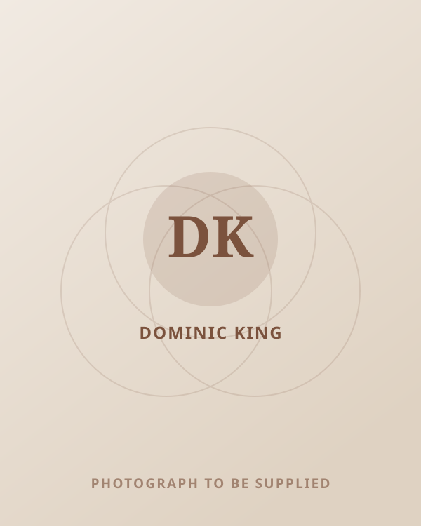
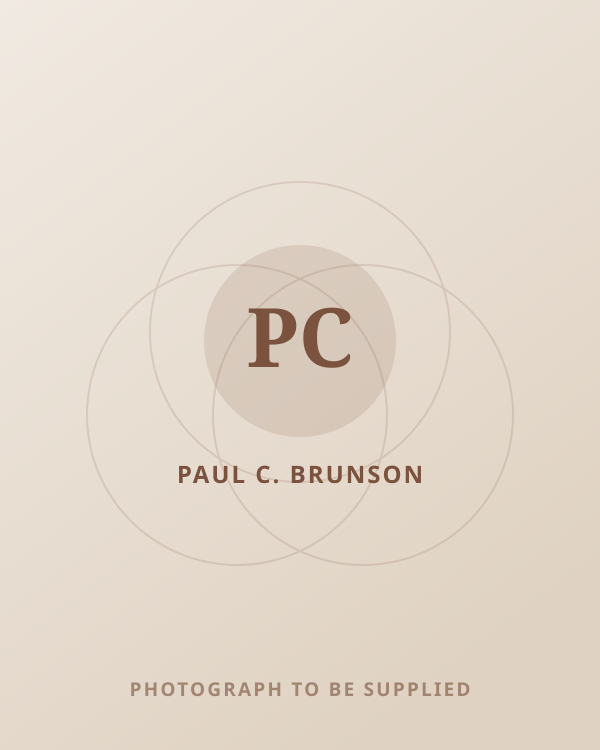
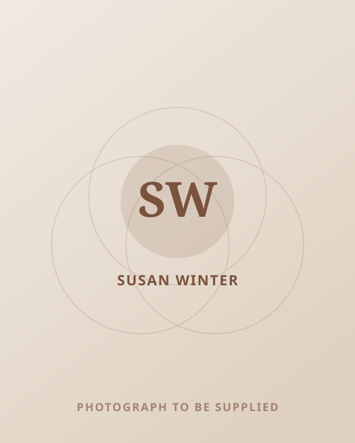
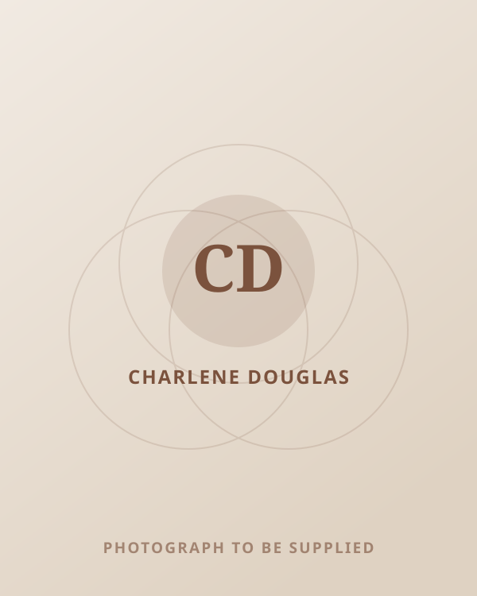

Clearer conversations
People are better equipped to speak openly and address issues before friction grows.
For Organisations
Practical support for the relationship dynamics and emotional well-being that shape how people communicate, collaborate and cope under pressure.

In everyday working life
Healthy workplaces are shaped through everyday conversations, boundaries, trust and the way people respond under pressure. The aim is not perfection. It is giving people practical ways to communicate more clearly, understand themselves and each other better, and navigate difficult moments with greater confidence.
Outcomes
People are better equipped to speak openly and address issues before friction grows.
Expectations, workload and personal limits can be discussed with greater clarity.
People notice emotional patterns and responses earlier, making more intentional choices possible.
Practical tools can support steadier responses during pressure, change and challenge.
Teams can build stronger habits around listening, empathy and accountability.
Greater awareness, communication and emotional regulation can support everyday confidence at work.
Recognised across the media
In their words
Broadcasters, presenters and fellow experts who have worked alongside Teresha on air and in conversation.

“Teresha is one of the best on air guests and experts you could have. She understands the audience and is relatable, clear and honest. She just gets it! She also knows how to enjoy the on air moment and it feels like you are hearing from a friend.”
Dominic King
Presenter, BBC Radio Kent.

“I had the pleasure of joining Teresha’s REAL-ationship Talk podcast and had a phenomenal experience and chat. I thoroughly enjoyed our discussion and highly recommend her work as a relationship coach.”
Paul C. Brunson
Relationship counsellor, matchmaker, television host and author.

“Fantastic audio/video interview with Teresha. Her interview questions and presentational skills are excellent.”
Susan Winter
Relationship expert, love coach, author and international media contributor.
Do’s and Don’ts for Dating and Relationship Success How to Stop Sabotaging Your Love Life
“Awww, loved speaking with you Teresha. Such a powerful interview. Thank you for the invitation to speak with you!”
Charlene Douglas
Sex and intimacy expert and television contributor.
Credibility
Trusted by organisations including Channel 4 and Mind.
IAPC&M Accredited Master Coach
Appointed Head of Mental Health & Well-being for IAPC&M members.
Get in touch to explore what this could look like for your organisation.